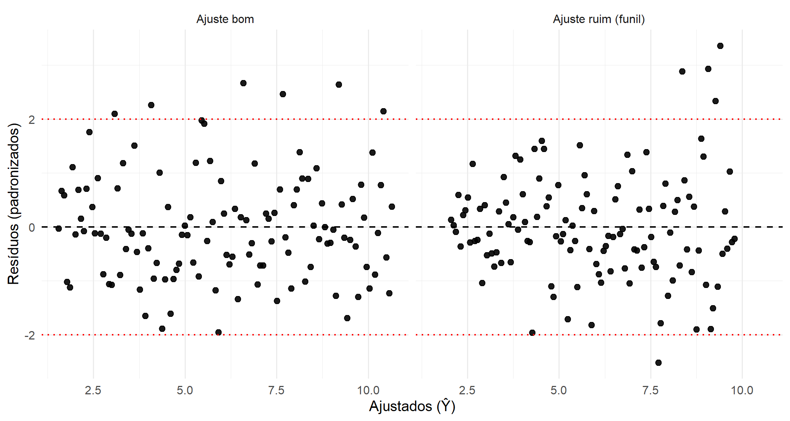
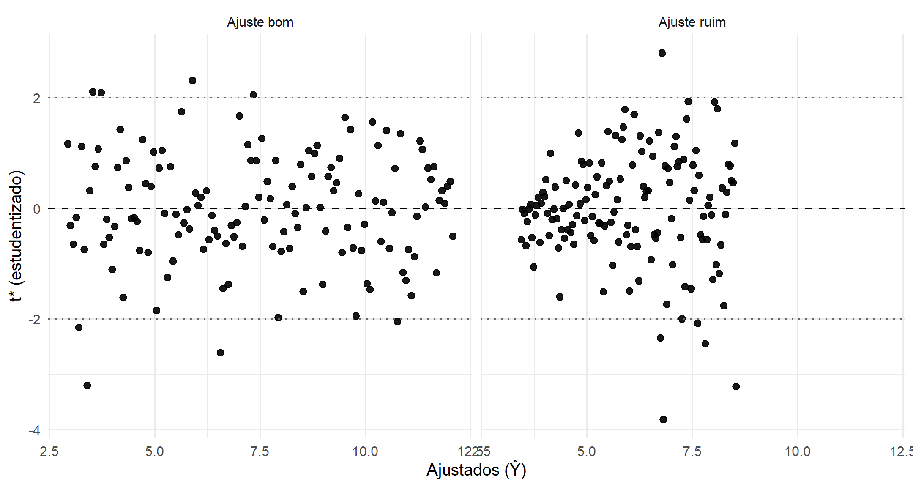
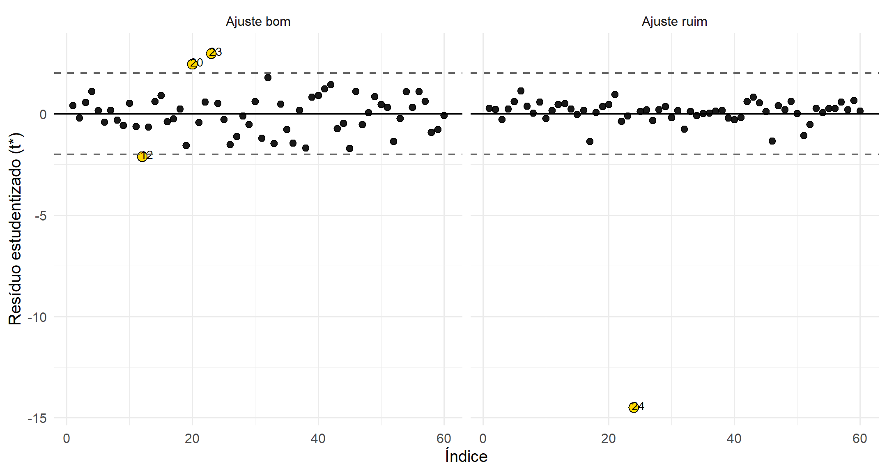
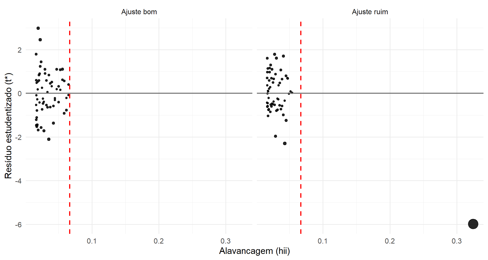

8 Diagnóstico e Avaliação no MRLS
8.1 Por que analisar resíduos?
Após o ajuste de um modelo de regressão, é essencial verificar se as hipóteses do MRLS do modelos para os erros aleatórios foram atendidas. Essa verificação se dá por diversos meios, sendo algumas dela via a análise dos resíduos.
Os resíduos mais intuitivos são definidos como:
\[ e_i = Y_i - \hat{Y}_i, \quad i=1,2,\dots,n. \]
Estes resíduos representam a parte de \(Y\) que não foi explicada pelo modelo. Enquanto os erros verdadeiros \(\varepsilon_i\) são inobserváveis, os resíduos são acessíveis e servem como suas aproximações.
Um ponto conceitual importante é distinguir “hipóteses sobre os erros” de “propriedades dos resíduos”. As hipóteses clássicas do MRLS são formuladas para os erros aleatórios \(\varepsilon_i\) (componentes não observáveis do mecanismo gerador de dados). Já os resíduos \(e_i\) são funções dos dados e dos estimadores, logo carregam restrições algébricas impostas pelo MQO. Assim, mesmo que o MRLS seja verdadeiro (isto é, as hipóteses sobre \(\varepsilon_i\) sejam satisfeitas), os resíduos não se comportam como uma amostra i.i.d. de uma mesma distribuição; em particular, eles são correlacionados e apresentam variâncias diferentes ao longo de \(i\) a dependendo da alavancagem (Searle (2016); Harville (2000)).
As principais hipóteses do modelo para os erros (\(\varepsilon\)) do MRLS são:
Média zero \((E[\varepsilon_i] = 0)\)
Variância constante \((Var[\varepsilon_i] = \sigma^2)\)
Não correlação entre os erros \((cov[\varepsilon_i,\varepsilon_j] = 0, \forall i \neq j)\)
Podem ser feitas hipóteses adicionais sobre a forma da distribuição dos erros, como assumir certa assimetria, curtose específica ou até uma distribuição conhecida.
A suposição (hipótese) distribuição mais considerada para a distribuição dos erros é:
- Normalidade \((\varepsilon_i \sim N(0,\sigma^2))\).
Um modelo só pode ser considerado adequado se os resíduos se comportarem como erros aleatórios: sem tendência sistemática, com variância aproximadamente constante, não correlacionaos e, em muitos contextos, aproximadamente normais. Em prática aplicada, é útil interpretar isso como: (i) a média condicional foi bem especificada (linearidade na forma funcional), (ii) a variância condicional não muda de forma sistemática (homocedasticidade) e (iii) não há estrutura temporal/espacial remanescente (independência), além de (iv) normalidade como hipótese adicional que viabiliza inferência exata e diagnósticos probabilísticos baseados em caudas (Montgomery, Peck, e Vining (2021); Kutner et al. (2005)).
8.2 Tipos de resíduos e propriedades
8.2.1 Resíduos ordinários
O ponto de partida são os resíduos ordinários:
\[ e_i = Y_i - \hat{Y}_i. \]
Eles indicam o desvio direto entre a observação e a reta ajustada. Por exemplo, \(e_i > 0\) mostra que o modelo subestimou \(Y_i\), enquanto \(e_i < 0\) mostra que o modelo superestimou.
Do ponto de vista conceitual, o resíduo é uma estimativa observável do erro aleatório \(\varepsilon_i\). Como \(\varepsilon_i\) não é observável, toda a etapa de diagnóstico repousa sobre a análise do comportamento dos \(e_i\). Entretanto, é fundamental compreender que resíduos não são os erros verdadeiros: eles dependem dos parâmetros estimados e, portanto, carregam estrutura imposta pelo método de mínimos quadrados Hoffmann (2016); Montgomery, Peck, e Vining (2021).
8.2.1.1 Propriedades básicas dos resíduos ordinários
O método dos mínimos quadrados impõe três propriedades estruturais:
Soma nula \[ \sum_{i=1}^n e_i = 0. \] A reta ajustada sempre passa pelo ponto médio amostral \((\bar X, \bar Y)\).
Ortogonalidade com o preditor \[ \sum_{i=1}^n e_i X_i = 0. \] Não há associação linear entre os resíduos e a variável explicativa. Caso existisse, o modelo poderia ser melhorado ajustando novamente a inclinação.
Soma de quadrados dos resíduos \[ \sum_{i=1}^n e_i^2 = SQ_{Res}, \] isto é, os resíduos concentram exatamente a variabilidade não explicada pelo modelo.
Essas propriedades decorrem diretamente das equações normais do método dos mínimos quadrados no caso univariado, obtidas pela minimização de \(\sum (Y_i - \beta_0 - \beta_1 X_i)^2\) em relação a \(\beta_0\) e \(\beta_1\) (Charnet et al. (2008); Kutner et al. (2005)).
Apêndice de Demonstrações {#demo}: as propriedades acima são obtidas substituindo \(\hat\beta_0\) e \(\hat\beta_1\) nas expressões dos resíduos e manipulando os somatórios resultantes das equações normais.
Essas três propriedades têm implicações importantes: mesmo que os erros verdadeiros sejam independentes e homocedásticos, os resíduos não são independentes entre si e tampouco possuem variância constante.
8.2.1.2 Esperança, variância, covariância e distribuição dos resíduos ordinários
- Esperança
\[ E[e_i] = 0. \]
Sob as hipóteses do MRLS, cada resíduo tem média zero. Isso significa que, em termos probabilísticos, o modelo não superestima nem subestima sistematicamente a resposta.
- Variância
\[ Var(e_i) = \sigma^2 (1 - h_{ii}), \]
em que
\[ h_{ii} = \frac{1}{n} + \frac{(x_i - \bar X)^2}{S_{xx}}. \]
A quantidade \(h_{ii}\) é chamada de alavancagem da observação \(i\). Ela mede o quanto o valor de \(X_i\) influencia o próprio ajuste \(\hat Y_i\).
Observações com valores de \(X_i\) muito afastados da média \(\bar X\) apresentam maior alavancagem. Como consequência, possuem menor variância residual, pois “ancoram” a reta ajustada com maior intensidade (Belsley, Kuh, e Welsch (1980); Montgomery, Peck, e Vining (2021)).
- Covariância
\[ Cov(e_i, e_j) = -\sigma^2 h_{ij}, \quad i \neq j, \]
em que
\[ h_{ij} = \frac{1}{n} + \frac{(x_i - \bar X)(x_j - \bar X)}{S_{xx}}. \]
Portanto, os resíduos são correlacionados entre si. Isso é consequência direta do fato de que todos os resíduos dependem dos mesmos estimadores \(\hat\beta_0\) e \(\hat\beta_1\) e, consequentemente, os resíduos não podem ser tratados como uma nova amostra independente de erros aleatórios (Kutner et al. (2005); Weisberg (2005)).
- Distribuição
Se assumimos normalidade para os erros aleatórios,
\[ \varepsilon_i \sim N(0,\sigma^2), \]
então os resíduos ordinários também seguem distribuição normal, pois são combinações lineares das variáveis \(\varepsilon_i\):
\[ e_i \sim N\!\big(0,\sigma^2(1-h_{ii})\big). \]
Essa normalidade é exata sob a hipótese de erros normais. Caso a normalidade não seja assumida, a distribuição dos resíduos pode ser aproximada por resultados assintóticos.
Apêndice de Demonstrações {#demo}: as expressões de variância e covariância dos resíduos são obtidas substituindo \(e_i = Y_i - \hat Y_i\) e utilizando as propriedades das variâncias de combinações lineares, juntamente com as expressões explícitas de \(\hat\beta_0\) e \(\hat\beta_1\) Kutner et al. (2005); Montgomery, Peck, e Vining (2021).
8.2.1.3 Implicações para diagnóstico
Esses resultados mostram que, mesmo quando as hipóteses usuais de média zero, variância constante, não correlação e normalidade para os erros aleatórios são satisfeitas, os resíduos ordinários apresentam:
- variância não constante (dependente de \(h_{ii}\)),
- correlação entre si,
- dependência dos parâmetros estimados.
Portanto, embora úteis para visualização inicial e interpretação direta do ajuste, os resíduos ordinários não são ideais para comparações diretas entre observações com diferentes níveis de alavancagem.
Essa limitação motiva a construção de resíduos transformados, como os resíduos padronizados e os resíduos estudentizados, que ajustam explicitamente a variabilidade individual e permitem diagnósticos mais adequados de pontos discrepantes e violações das hipóteses do modelo (Belsley, Kuh, e Welsch (1980); Weisberg (2005)).
8.2.2 Resíduos padronizados
Com o objetivo de tornar os resíduos comparáveis entre si, ajustando a diferença de variâncias individuais, definem-se os resíduos padronizados como
\[ r_i = \frac{e_i}{s \sqrt{1 - h_{ii}}}, \quad \text{com} \quad s^2 = \frac{SQ_{Res}}{n-2}. \]
Aqui, \(e_i\) é o resíduo ordinário, \(h_{ii}\) é a alavancagem da observação \(i\) e \(s^2\) é o estimador não viesado de \(\sigma^2\). A ideia central é simples: como
\[ Var(e_i) = \sigma^2 (1 - h_{ii}), \]
dividir \(e_i\) por uma estimativa de seu desvio-padrão elimina a heterogeneidade de variâncias e produz uma quantidade adimensional.
Do ponto de vista conceitual, essa padronização desempenha papel análogo ao de uma estatística \(z\): ela mede o “tamanho” do desvio em unidades de desvio-padrão estimado.
8.2.2.1 Propriedades fundamentais
Sob as hipóteses do MRLS:
Esperança aproximada \[ E[r_i] \approx 0. \]
Variância aproximada \[ Var(r_i) \approx 1. \]
A aproximação decorre do fato de que \(s^2\) é uma estimativa de \(\sigma^2\). Se \(\sigma^2\) fosse conhecido, teríamos exatamente
\[ \frac{e_i}{\sigma \sqrt{1-h_{ii}}} \sim N(0,1), \]
sob normalidade dos erros.
Entretanto, como \(\sigma^2\) é substituído por \(s^2\), a estatística passa a envolver uma razão entre variáveis aleatórias dependentes.
8.2.2.2 Distribuição dos resíduos padronizados
Se os erros seguem
\[ \varepsilon_i \sim N(0,\sigma^2), \]
então, para amostras moderadas ou grandes, vale a aproximação:
\[ r_i \approx t_{n-2}. \]
A aproximação não é exata porque \(e_i\) e \(s^2\) não são independentes: ambos dependem das mesmas observações e dos mesmos estimadores \(\hat\beta_0\) e \(\hat\beta_1\) (Weisberg (2005)).
Em amostras grandes, pela consistência de \(s^2\) para \(\sigma^2\), a distribuição de \(r_i\) aproxima-se da normal padrão:
\[ r_i \overset{aprox}{\sim} N(0,1). \]
Apêndice de Demonstrações {#demo}: a aproximação \(r_i \approx t_{n-2}\) decorre da substituição de \(\sigma^2\) por \(s^2\) na padronização e do fato de que \((n-2)s^2/\sigma^2 \sim \chi^2_{n-2}\) sob normalidade dos erros.
8.2.2.3 Interpretação prática
Os resíduos padronizados permitem comparar observações com diferentes alavancagens. Um mesmo valor absoluto de resíduo ordinário pode ser pequeno ou grande dependendo de \(h_{ii}\). A padronização corrige esse efeito.
Uma regra prática frequentemente utilizada é:
- \(|r_i| > 2\) → possível observação discrepante.
- \(|r_i| > 3\) → forte indício de discrepância.
Esses limiares baseiam-se na probabilidade de observar valores extremos sob uma distribuição aproximadamente normal ou \(t\). Por exemplo, sob normalidade, a probabilidade de \(|Z|>2\) é aproximadamente 5%.
Contudo, essa interpretação deve ser feita com cautela:
- Em amostras grandes, é esperado que alguns valores ultrapassem 2 apenas por variabilidade natural.
- Em amostras pequenas, a aproximação pode ser imprecisa.
- A presença de múltiplos testes simultâneos pode inflar a taxa de falsos positivos.
8.2.2.4 Limitações conceituais
Apesar de mais informativos que os resíduos ordinários, os resíduos padronizados ainda apresentam uma limitação importante: o denominador \(s\) é calculado utilizando todas as observações, inclusive a própria observação \(i\).
Assim, um ponto extremo pode inflar \(s\), reduzindo artificialmente seu próprio resíduo padronizado, fenômeno conhecido como masking (mascaramento) (Belsley, Kuh, e Welsch (1980)).
Essa limitação motiva a definição dos resíduos estudentizados externos, nos quais a variância é estimada excluindo-se a própria observação sob análise.
Em síntese:
- Resíduos ordinários medem o erro bruto.
- Resíduos padronizados tornam os erros comparáveis.
- A padronização é essencial para diagnóstico formal de outliers e para construção de gráficos de resíduos mais informativos.
Nos próximos tópicos, veremos como a estudentização externa corrige a dependência entre numerador e denominador e fornece uma estatística com distribuição \(t\) exata sob as hipóteses do modelo.
8.2.3 Resíduos estudentizados (externos)
Os resíduos estudentizados externos (também chamados de externally studentized residuals ou deleted residuals) foram propostos no contexto de diagnóstico de regressão para contornar a dependência entre numerador e denominador presente nos resíduos padronizados (Belsley, Kuh, e Welsch (1980); Weisberg (2005)).
Eles são definidos por
\[ t_i^* = \frac{e_i}{s_{(i)} \sqrt{1 - h_{ii}}}, \]
em que:
- \(e_i\) é o resíduo ordinário da observação \(i\);
- \(h_{ii}\) é a alavancagem da observação \(i\);
- \(s_{(i)}^2\) é o estimador da variância do erro calculado excluindo a i-ésima observação.
Isto é, \(s_{(i)}^2\) é obtido ajustando o modelo com \(n-1\) observações, removendo o ponto \(i\). Assim, o denominador não sofre influência direta da própria observação cujo resíduo está sendo avaliado.
8.2.3.1 Motivação conceitual
Nos resíduos padronizados,
\[ r_i = \frac{e_i}{s \sqrt{1-h_{ii}}}, \]
Como apresentado anteriormente, o estimador \(s^2\) é calculado usando todas as observações. Se a observação \(i\) for discrepante, ela pode inflar \(s^2\), reduzindo artificialmente \(|r_i|\) e dificultando sua própria detecção.
Ao substituir \(s\) por \(s_{(i)}\), eliminamos essa retroalimentação. O resíduo passa a ser avaliado em relação a um modelo que não foi influenciado por ele mesmo.
8.2.3.2 Distribuição exata
Sob as hipóteses do MRLS com erros normais,
\[ \varepsilon_i \sim N(0,\sigma^2), \]
temos que
\[ t_i^* \sim t_{n-3}. \]
A perda de um grau de liberdade adicional (em comparação com \(t_{n-2}\)) decorre do fato de que a variância foi estimada com \(n-3\) graus de liberdade no modelo ajustado sem a observação \(i\) (Kutner et al. (2005); Montgomery, Peck, e Vining (2021)).
Essa é uma propriedade importante: diferentemente dos resíduos padronizados, aqui a distribuição \(t\) é exata sob normalidade dos erros.
Apêndice de Demonstrações {#demo}: a distribuição exata de \(t_i^*\) é obtida mostrando que, sob \(H_0\), o numerador é normal e independente do estimador \(s_{(i)}^2\), o qual é proporcional a uma variável qui-quadrado com \(n-3\) graus de liberdade.
8.2.3.3 Interpretação prática
Como \(t_i^*\) segue exatamente uma distribuição \(t\), podemos utilizar pontos críticos formais para avaliar discrepância individual:
- \(|t_i^*| > t_{1-\alpha/2,\, n-3}\) → evidência de que a observação \(i\) é discrepante ao nível \(\alpha\).
Na prática:
- \(|t_i^*| > 2\) sugere possível discrepância;
- \(|t_i^*| > 3\) indica forte indício de outlier, especialmente em amostras moderadas.
Elevando ao quadrado:
\[ t_i^{*2} \sim F_{1,n-3}, \]
pois o quadrado de uma variável com distribuição \(t_k\) segue distribuição \(F_{1,k}\) (Casella e Berger (2002)). Essa relação conecta o diagnóstico individual de observações com a lógica dos testes \(F\) discutidos anteriormente.
8.3 Influência, alavancagem e leitura conjunta dos resíduos
A etapa mais importante do diagnóstico no MRLS consiste em integrar três dimensões distintas, mas complementares:
- discrepância na variável resposta (\(Y\));
- posição extrema na variável explicativa (\(X\));
- impacto global sobre os estimadores do modelo.
Essa integração é fundamental para evitar conclusões equivocadas baseadas apenas no tamanho do resíduo.
8.3.1 Relação entre discrepância, alavancagem e influência
É importante distinguir conceitualmente:
- Possível outlier em \(Y\): grande \(|t_i^*|\);
- Alta alavancagem: grande \(h_{ii}\);
- Observação influente: combinação de grande \(|t_i^*|\) e grande \(h_{ii}\).
Um ponto pode apresentar alto resíduo, mas baixa alavancagem, afetando pouco a inclinação da reta. Nesse caso, ele é discrepante na resposta, mas não necessariamente influente.
Por outro lado, uma observação pode ter pequena discrepância em \(Y\), mas alta alavancagem em \(X\), alterando significativamente a inclinação estimada \(\hat\beta_1\). Nesse caso, mesmo com resíduo pequeno, o ponto pode ser estruturalmente influente.
8.3.2 Alavancagem no MRLS
A alavancagem da observação \(i\) é dada por
\[ h_{ii} = \frac{1}{n} + \frac{(X_i - \bar X)^2}{S_{xx}}, \quad \text{com} \quad S_{xx} = \sum_{j=1}^n (X_j - \bar X)^2. \]
Ela mede o quanto o valor de \(X_i\) influencia o próprio ajuste \(\hat{Y}_i\).
Propriedades importantes no MRLS:
- \(0 < h_{ii} < 1\);
- \[ \sum_{i=1}^n h_{ii} = 2, \] pois dois parâmetros são estimados (\(\beta_0\) e \(\beta_1\));
- a média das alavancagens é \(2/n\).
Observações com \(X_i\) muito afastado da média \(\bar X\) possuem maior alavancagem e exercem maior influência geométrica sobre a reta ajustada (Montgomery, Peck, e Vining (2021); Kutner et al. (2005)).
Uma regra prática comum é considerar como potencialmente alta alavancagem valores tais que
\[ h_{ii} > \frac{2p}{n}, \]
em que \(p\) é o número de parâmetros do modelo (no MRLS, \(p=2\)). Assim, valores acima de \(4/n\) merecem atenção especial (Belsley, Kuh, e Welsch (1980)).
8.3.3 Conexão entre alavancagem e variância residual
Recordando que
\[ Var(e_i) = \sigma^2 (1 - h_{ii}), \]
vemos que observações com maior alavancagem apresentam menor variância residual. Isso ocorre porque esses pontos “puxam” a reta para mais perto de si.
Portanto, um ponto com alto \(h_{ii}\) pode ter resíduo pequeno não porque esteja bem ajustado, mas porque influenciou fortemente o ajuste.
Essa distinção é conceitualmente importante:
- Resíduo mede discrepância vertical.
- Alavancagem mede posição extrema em \(X\).
- Influência mede alteração no modelo quando a observação é removida.
8.3.4 Síntese diagnóstica
A leitura conjunta pode ser organizada da seguinte forma:
Resíduos grandes + baixa alavancagem
→ outliers na resposta (\(Y\)), com impacto limitado na inclinação.Resíduos pequenos + alta alavancagem
→ observações potencialmente influentes, mesmo sem grande discrepância aparente.Resíduos grandes + alta alavancagem
→ casos críticos, com forte potencial de distorcer significativamente o ajuste.
Medidas integradas, como a distância de Cook,
\[ D_i = \frac{t_i^{*2}}{2} \cdot \frac{h_{ii}}{1 - h_{ii}}, \]
quantificam diretamente o quanto os estimadores \((\hat\beta_0,\hat\beta_1)\) se alterariam caso a observação \(i\) fosse removida (Belsley, Kuh, e Welsch (1980); Weisberg (2005)).
8.3.5 Resumo comparativo dos resíduos
| Tipo de resíduo | Fórmula | \(E(.)\) | \(Var(.)\) | Distribuição |
|---|---|---|---|---|
| Ordinário \(e_i\) | \(Y_i - \hat Y_i\) | \(0\) | \(\sigma^2 (1 - h_{ii})\) | \(N(0, \sigma^2 (1 - h_{ii}))\) |
| Padronizado \(r_i\) | \(\dfrac{e_i}{s \sqrt{1-h_{ii}}}\) | \(\approx 0\) | \(\approx 1\) | Aprox. \(t_{n-2}\) |
| Estudentizado \(t_i^*\) | \(\dfrac{e_i}{s_{(i)} \sqrt{1-h_{ii}}}\) | \(0\) | \(1\) | \(t_{n-3}\) |
Em síntese:
- Resíduos ordinários fornecem a discrepância bruta.
- Resíduos padronizados tornam as observações comparáveis.
- Resíduos estudentizados externos permitem inferência formal com distribuição \(t\) exata sob normalidade.
- Alavancagem identifica observações estruturalmente extremas.
- Medidas de influência integram discrepância e posição.
Somente essa leitura integrada permite avaliar adequadamente a robustez do ajuste no MRLS e identificar observações com potencial de comprometer a inferência estatística.
8.4 Testes formais dos resíduos
Antes da inspeção gráfica, é possível realizar testes estatísticos formais aplicados aos resíduos do MRLS. Esses testes não substituem a análise gráfica, mas fornecem evidência quantitativa sobre possíveis violações das hipóteses clássicas, especialmente normalidade e independência dos erros.
É fundamental compreender que tais testes avaliam hipóteses específicas do modelo (por exemplo, normalidade dos erros), e não a “qualidade geral” da regressão. A interpretação correta exige articulação entre teoria, estatística e contexto (Kutner et al. (2005); Montgomery, Peck, e Vining (2021); Weisberg (2005)).
8.4.1 Teste para Assimetria (Skewness)
A estatística de assimetria é definida por
\[ S = \frac{\frac{1}{n}\sum_{i=1}^n (e_i - \bar e)^3} {\left(\frac{1}{n}\sum_{i=1}^n (e_i - \bar e)^2\right)^{3/2}}, \]
cujo valores de referência são:
- \(S=0\) → simetria;
- \(S>0\) → cauda longa à direita;
- \(S<0\) → cauda longa à esquerda.
Sob a hipótese de normalidade dos resíduos, podemos formular as seguintes hipóteses:
\[ H_0: \text{Distribuição simétrica (} S = 0\text{)} \]
\[ H_1: \text{Distribuição assimétrica (} S \neq 0\text{)} \]
Para amostras grandes, vale a aproximação assintótica:
\[ Z_S = \sqrt{\frac{n}{6}}\, S \sim N(0,1). \] Esse teste verifica se há evidência estatística de assimetria na distribuição residual. Valores positivos indicam cauda longa à direita; valores negativos indicam cauda longa à esquerda.
Assimetria residual pode indicar: - variável resposta naturalmente assimétrica (ex.: tempos, rendas); - necessidade de transformação; - presença de outliers em apenas um lado da distribuição.
A assimetria detectada estatisticamente pode ser irrelevante do ponto de vista prático se o impacto sobre estimativas e previsões for pequeno. Por isso, a análise gráfica (histograma e QQ-plot) é complementar e essencial (Weisberg (2005); Montgomery, Peck, e Vining (2021)).
8.4.2 Teste para Curtose (Kurtosis)
A curtose é definida por
\[ K = \frac{\frac{1}{n}\sum_{i=1}^n (e_i - \bar e)^4} {\left(\frac{1}{n}\sum_{i=1}^n (e_i - \bar e)^2\right)^2}, \]
com os seguinte valores de referência:
- \(K=3\) → normal (mesocúrtica);
- \(K>3\) → caudas pesadas (leptocúrtica);
- \(K<3\) → caudas leves (platicúrtica).
Sob a hipótese de normalidade dos resíduos, podemos formular as seguintes hipóteses:
\[ H_0: K = 3 \]
\[ H_1: K \neq 3 \]
Para amostras grandes:
\[ Z_K = \sqrt{\frac{n}{24}} (K - 3) \sim N(0,1). \]
Curtose elevada frequentemente sinaliza presença de outliers ou heterogeneidade de variância. Caudas pesadas significam maior probabilidade de valores extremos, o que pode afetar inferência e previsão.
Assim como a assimetria, a curtose deve ser interpretada junto com resíduos estudentizados e medidas de influência. Muitas vezes, poucos pontos extremos explicam grande parte da rejeição da normalidade (Belsley, Kuh, e Welsch (1980); Weisberg (2005)).
8.4.3 3. Omnibus Test (D’Agostino–Pearson)
O teste Omnibus combina os dois testes anteriores (assimetria e curtose) em uma única estatística.
Sejam:
\[ Z_1 = Z_S \quad \text{e} \quad Z_2 = Z_K. \]
A estatística do teste é:
\[ OM = Z_1^2 + Z_2^2. \]
Ou seja, \(Z_1\) é a estatística padronizada da assimetria e \(Z_2\) a da curtose. Sob \(H_0\) (normalidade), vale assintoticamente:
Para o teste Omnibus, formulmos as seguintes hipóteses: \[ H_0: \text{Resíduos seguem distribuição normal} \]
\[ H_1: \text{Resíduos não seguem distribuição normal} \] Sob \(H_0\),
\[ OM \sim \chi^2_{(2)}. \]
O Omnibus é um teste conjunto: ele detecta qualquer violação que afete simetria ou curtose. Em vez de avaliar dois testes separados, consolida evidência em uma única estatística. Adicionalmente, como a distribuição é assintótica, sua confiabilidade aumenta com o tamanho amostral. Em amostras pequenas, o teste pode apresentar distorções no nível de significância.
8.4.4 4. Jarque–Bera (JB)
O teste de Jarque–Bera também combina assimetria e curtose, mas diretamente em termos de seus estimadores:
\[ JB = \frac{n}{6}\left(S^2 + \frac{(K-3)^2}{4}\right). \]
Hipóteses do teste são:
\[ H_0: \text{Resíduos seguem distribuição normal} \]
\[ H_1: \text{Resíduos não seguem distribuição normal} \]
Sob \(H_0\),
\[ JB \sim \chi^2_{(2)}. \]
Observe que o JB é equivalente, do ponto de vista assintótico, à soma dos quadrados das versões padronizadas de \(S\) e \(K-3\).
O JB mede a distância conjunta entre a distribuição empírica dos resíduos e a normal, considerando forma (assimetria) e peso de caudas (curtose).
Note que rejeitar normalidade não implica que o modelo linear esteja incorreto, isso pode indicar apenas que os erros não são gaussianos. A relevância prática depende do objetivo (estimação, teste, previsão) e do tamanho da amostra (Casella e Berger (2002); Kutner et al. (2005)). ### 5. Durbin–Watson (DW)
O teste de Durbin–Watson verifica autocorrelação serial:
\[ DW = \frac{\sum_{t=2}^n (e_t - e_{t-1})^2} {\sum_{t=1}^n e_t^2}. \]
As hipóteses clássicas são:
\[ H_0: \rho = 0 \quad (\text{ausência de autocorrelação}) \]
\[ H_1: \rho \neq 0 \quad (\text{autocorrelação}) \]
A interpretação usual é:
- \(DW \approx 2\) → ausência de autocorrelação;
- \(DW < 2\) → autocorrelação positiva;
- \(DW > 2\) → autocorrelação negativa.
O DW mede o quanto os resíduos consecutivos diferem entre si. Se \(e_t\) e \(e_{t-1}\) forem semelhantes (dependência positiva), o numerador será pequeno e \(DW\) ficará abaixo de 2.
Este teste é especialmente relevante em dados ordenados temporalmente (econometria, séries temporais). Em dados sem ordem natural, sua aplicação é menos informativa (Gujarati (2006)).
Autocorrelação residual pode indicar: - tendência não modelada; - variáveis omitidas; - estrutura dinâmica inerente ao fenômeno.
Detectar autocorrelação é apenas o início do diagnóstico.
8.5 Diagnóstico gráfico do MRLS
A análise gráfica dos resíduos é uma das etapas mais importantes na verificação das hipóteses do MRLS. Os gráficos funcionam como ferramentas de diagnóstico visual, permitindo identificar padrões que revelem problemas estruturais no modelo Montgomery, Peck, e Vining (2021); Kutner et al. (2005); Weisberg (2005).
Em um modelo bem especificado, os resíduos devem se comportar como ruído puro: dispersão aleatória em torno de zero, variância aproximadamente constante e sem estrutura aparente. Em termos práticos, isso significa que, condicionado aos valores de \(X\), não deve existir informação sistemática remanescente nos resíduos que pudesse ser capturada por uma reespecificação simples do modelo (por exemplo, inclusão de termos não lineares ou transformação da resposta) Montgomery, Peck, e Vining (2021); Weisberg (2005).
A seguir, são descritos os principais gráficos e o que se esperar de cada um.
8.5.1 Resíduos vs ajustados (linearidade e homoscedasticidade)
Este é o gráfico diagnóstico mais usado na prática, pois confronta diretamente o “erro” estimado (resíduo) com o nível de resposta previsto pelo modelo.
- O que se espera:
- pontos dispersos aleatoriamente em torno da linha horizontal \(0\), sem padrão definido.
- amplitude (dispersão vertical) aproximadamente constante ao longo de toda a faixa de \(\hat Y_i\).
- poucos pontos ultrapassando as faixas de referência usuais (por exemplo, \(|r_i| \approx 2\) ou \(|t_i^*| \approx 2\), dependendo do resíduo adotado).
- pontos dispersos aleatoriamente em torno da linha horizontal \(0\), sem padrão definido.
- O que indica problema:
- padrão em curva → sugere que a relação média \(E(Y\mid X)\) não está bem representada por uma função linear; pode indicar necessidade de termos como \(X^2\) ou outra reespecificação funcional.
- forma de funil (variância aumenta ou diminui com \(\hat Y_i\)) → indício de heteroscedasticidade (variância não constante).
- concentração de resíduos positivos (negativos) em certas regiões → modelo subestima (superestima) sistematicamente nessas regiões, sugerindo viés local de especificação.
- pontos isolados muito afastados do conjunto principal → possível outlier/influência; a confirmação deve ser feita em leitura conjunta com resíduos estudentizados \(t_i^*\), alavancagem \(h_{ii}\) e medidas de influência como a distância de Cook Belsley, Kuh, e Welsch (1980); Weisberg (2005).
- padrão em curva → sugere que a relação média \(E(Y\mid X)\) não está bem representada por uma função linear; pode indicar necessidade de termos como \(X^2\) ou outra reespecificação funcional.
Para diagnóstico visual, é recomendável utilizar resíduos que sejam comparáveis entre observações. Assim, em muitos contextos prefere-se plotar resíduos padronizados (\(r_i\)) ou estudentizados externos (\(t_i^*\)), em vez de resíduos ordinários (\(e_i\)), pois estes últimos têm variância dependente da alavancagem \((1-h_{ii})\) (Montgomery, Peck, e Vining (2021); Kutner et al. (2005)).
8.5.2 Resíduos vs \(X\) (forma funcional)
Este gráfico é conceitualmente muito próximo ao anterior, mas desloca o foco: em vez de relacionar os resíduos com os valores ajustados \(\hat Y_i\), relaciona-os diretamente com a variável explicativa \(X_i\).
- O que se espera:
- aleatoriedade semelhante ao gráfico anterior, mas agora em função de \(X\).
- dispersão aproximadamente constante ao longo de toda a faixa de \(X\).
- ausência de estruturas sistemáticas associadas a regiões específicas de \(X\).
- aleatoriedade semelhante ao gráfico anterior, mas agora em função de \(X\).
- O que indica problema:
- estruturas em forma de arco ou curva → o efeito de \(X\) pode ser não linear; o modelo linear \(E(Y\mid X)=\beta_0+\beta_1X\) pode estar omitindo termos relevantes (por exemplo, \(X^2\) ou outra transformação).
- padrões em “S” ou mudança de inclinação → possível quebra de regime ou efeito estrutural não capturado.
- faixas onde a dispersão muda → variação da variância conforme \(X\), sugerindo heteroscedasticidade.
- concentração de pontos extremos em regiões específicas de \(X\) → possível influência associada a valores extremos da variável explicativa.
- estruturas em forma de arco ou curva → o efeito de \(X\) pode ser não linear; o modelo linear \(E(Y\mid X)=\beta_0+\beta_1X\) pode estar omitindo termos relevantes (por exemplo, \(X^2\) ou outra transformação).
Enquanto o gráfico resíduos vs ajustados enfatiza o comportamento do erro em relação à resposta prevista, o gráfico resíduos vs \(X\) enfatiza a adequação da forma funcional da regressão. Ele permite avaliar diretamente se a hipótese de linearidade entre \(X\) e a média condicional de \(Y\) é plausível (Montgomery, Peck, e Vining (2021); Kutner et al. (2005)).
Este gráfico é especialmente informativo quando \(X\) possui interpretação física, econômica ou temporal clara. Nesses casos, padrões sistemáticos ao longo de \(X\) podem revelar efeitos omitidos, mudanças estruturais ou fenômenos não lineares que não são imediatamente visíveis no gráfico resíduos vs ajustados.
Assim como no gráfico anterior, recomenda-se utilizar resíduos padronizados ou estudentizados para tornar a escala comparável entre observações, principalmente quando há variação relevante na alavancagem \(h_{ii}\).

8.5.3 Resíduos estudentizados vs valores ajustados (outliers + estrutura)
Este gráfico é uma versão refinada do gráfico resíduos vs ajustados, utilizando os resíduos estudentizados externos \(t_i^*\). Ele combina duas dimensões do diagnóstico: discrepância individual e possível estrutura sistemática.
- Por que usar:
- tornam resíduos comparáveis, pois ajustam pela variância individual de cada ponto, incorporando o fator \((1-h_{ii})\) associado à alavancagem.
- utilizam uma estimativa da variância \(\sigma^2\) calculada sem a observação \(i\) (\(s_{(i)}\)), reduzindo o efeito de mascaramento que pode ocorrer quando um ponto extremo influencia a própria estimativa de variância.
- possuem, sob normalidade dos erros, distribuição exata \(t_{n-3}\), permitindo interpretação inferencial mais precisa (Montgomery, Peck, e Vining (2021); Kutner et al. (2005)).
- tornam resíduos comparáveis, pois ajustam pela variância individual de cada ponto, incorporando o fator \((1-h_{ii})\) associado à alavancagem.
- O que se espera:
- aleatoriedade em torno da linha horizontal \(0\).
- a maioria dos pontos entre \(-2\) e \(+2\), sendo raros valores com \(|t_i^*|>3\) em amostras moderadas.
- ausência de padrão sistemático ao longo da faixa de valores ajustados.
- aleatoriedade em torno da linha horizontal \(0\).
- O que indica problema:
- pontos fora do intervalo \([-2,2]\) → observações potencialmente discrepantes; valores acima de \(|t_i^*|>3\) são frequentemente considerados fortemente suspeitos.
- estruturas visíveis (curvas, funis) → possíveis violações de linearidade ou homocedasticidade, agora avaliadas com resíduos que já consideram diferenças de variância individual.
- concentração de valores extremos em regiões de alta alavancagem → possível influência desproporcional sobre os estimadores.
- pontos fora do intervalo \([-2,2]\) → observações potencialmente discrepantes; valores acima de \(|t_i^*|>3\) são frequentemente considerados fortemente suspeitos.
Os resíduos estudentizados externos medem o quanto cada observação se afasta do modelo ajustado, levando em conta tanto a variabilidade residual quanto sua própria posição geométrica no conjunto de dados. Assim, eles são especialmente adequados para identificar outliers reais, isto é, observações cuja discrepância não pode ser explicada apenas por sua alavancagem.
Um ponto com resíduo ordinário grande pode deixar de parecer extremo após a estudentização se sua variância condicional for naturalmente maior. Por outro lado, um ponto que permanece extremo mesmo após a correção por \((1-h_{ii})\) e por \(s_{(i)}\) merece investigação cuidadosa — seja por erro de registro, seja por representar um fenômeno estrutural distinto (Belsley, Kuh, e Welsch (1980); Weisberg (2005)).

8.5.4 QQ-plot (normalidade)
O gráfico QQ-plot (quantile–quantile) compara os quantis empíricos dos resíduos com os quantis teóricos de uma distribuição normal padrão. Ele é uma das ferramentas mais informativas para avaliar a hipótese de normalidade dos erros no MRLS (Montgomery, Peck, e Vining (2021); Kutner et al. (2005); Weisberg (2005)).
- O que se espera:
- pontos aproximadamente alinhados em torno da reta de 45°, indicando que os resíduos seguem aproximadamente uma distribuição normal.
- pequenas flutuações aleatórias ao redor da reta, especialmente no centro da distribuição.
- ausência de desvios sistemáticos nas caudas.
- pontos aproximadamente alinhados em torno da reta de 45°, indicando que os resíduos seguem aproximadamente uma distribuição normal.
- O que indica problema:
- desvios sistemáticos nas extremidades → caudas mais pesadas (pontos afastados da reta nas pontas) ou mais leves que a normal.
- desvios em formato de “S” → indício de assimetria dos resíduos.
- afastamentos persistentes ao longo de toda a reta → possível inadequação global da suposição de normalidade.
- pontos isolados muito distantes nas pontas → presença de outliers, que podem ser responsáveis por grande parte da violação observada.
- desvios sistemáticos nas extremidades → caudas mais pesadas (pontos afastados da reta nas pontas) ou mais leves que a normal.
O QQ-plot compara toda a forma da distribuição. Se os resíduos forem normais, seus quantis empíricos devem crescer linearmente com os quantis teóricos da normal. Desvios sistemáticos dessa linearidade indicam diferenças estruturais entre as distribuições.
É fundamental interpretar o QQ-plot em conjunto com resíduos estudentizados e medidas de influência. Muitas vezes, poucos pontos extremos explicam a maior parte do desvio observado nas caudas. Além disso, pequenas curvaturas no centro do gráfico, especialmente em amostras grandes, podem não ter relevância prática para a inferência, sobretudo quando o objetivo principal é previsão e não testes exatos em pequenas amostras (Casella e Berger (2002); Kutner et al. (2005)).
O QQ-plot, portanto, oferece uma visão global da normalidade e complementa tanto os testes formais (como Jarque–Bera) quanto os gráficos de histograma.

8.5.5 Histograma (assimetria e caudas)
O histograma dos resíduos é uma ferramenta complementar ao QQ-plot. Enquanto o QQ-plot enfatiza o alinhamento com a normal teórica por meio de quantis, o histograma permite visualizar diretamente a forma empírica da distribuição residual (Montgomery, Peck, e Vining (2021); Kutner et al. (2005); Weisberg (2005)).
- O que se espera:
- distribuição aproximadamente simétrica em torno de zero.
- formato aproximadamente em sino (curva unimodal e suave).
- maior concentração de valores próximos de \(0\), com frequência decrescente nas extremidades.
- distribuição aproximadamente simétrica em torno de zero.
- O que indica problema:
- assimetria → possível necessidade de transformação na resposta (\(Y\)), como \(\log(Y)\) ou \(\sqrt{Y}\), especialmente quando a assimetria é estrutural e não causada por poucos pontos extremos.
- caudas longas → presença de outliers ou distribuição com maior probabilidade de valores extremos do que a normal.
- bimodalidade ou múltiplos picos → possível mistura de grupos ou estrutura omitida no modelo (por exemplo, variável categórica não incluída).
- concentração excessiva no centro com poucas observações nas extremidades → caudas leves (platicurtose), também incompatíveis com normalidade.
- assimetria → possível necessidade de transformação na resposta (\(Y\)), como \(\log(Y)\) ou \(\sqrt{Y}\), especialmente quando a assimetria é estrutural e não causada por poucos pontos extremos.
O histograma fornece uma visão direta da densidade empírica dos resíduos. Em um modelo com erros normais, espera-se que a forma geral seja compatível com a curva Normal\((0,\sigma^2)\). Desvios sistemáticos dessa forma indicam diferenças estruturais na distribuição do erro.
Adicionamente, o histograma é sensível à escolha do número de classes (bins). Diferentes escolhas podem alterar a percepção visual da forma. Por isso, recomenda-se utilizá-lo em conjunto com o QQ-plot e com medidas numéricas de assimetria e curtose.
Além disso, é importante lembrar que pequenas assimetrias visuais, especialmente em amostras grandes, podem não comprometer de forma relevante a inferência baseada em MQO, cuja robustez assintótica é discutida em (Casella e Berger (2002); Kutner et al. (2005)).

8.5.6 Resíduos estudentizados vs índice (pontos atípicos)
Este gráfico apresenta os resíduos estudentizados externos \(t_i^*\) em função do índice da observação \(i\). Ele é particularmente útil para identificar observações discrepantes individuais, destacando sua posição relativa no conjunto de dados.
- Por que usar:
- são melhores na detecção de outliers, pois corrigem a influência da própria observação ao utilizar a estimativa de variância \(s_{(i)}\), calculada sem o ponto \(i\).
- possuem distribuição \(t_{n-3}\) sob normalidade dos erros, permitindo interpretação inferencial direta.
- facilitam a visualização de padrões associados à ordem natural dos dados (por exemplo, tempo ou sequência experimental) Montgomery, Peck, e Vining (2021); Kutner et al. (2005).
- são melhores na detecção de outliers, pois corrigem a influência da própria observação ao utilizar a estimativa de variância \(s_{(i)}\), calculada sem o ponto \(i\).
- O que se espera:
- quase todos os pontos entre \(-2\) e \(+2\).
- raros pontos ultrapassando \(|t_i^*|>3\), especialmente em amostras moderadas.
- ausência de padrões sistemáticos ao longo do índice.
- quase todos os pontos entre \(-2\) e \(+2\).
- O que indica problema:
- valores extremos em \(|t_i^*|\) → sugerem observações potencialmente discrepantes; quanto maior o valor absoluto, maior a evidência de que o ponto não é compatível com a variabilidade esperada sob o modelo.
- agrupamento de valores extremos em determinadas regiões do índice → pode indicar mudança estrutural, dependência temporal ou erro sistemático de medição.
- padrões alternados (positivo–negativo–positivo) → possível autocorrelação residual, especialmente quando os dados possuem ordem temporal.
- valores extremos em \(|t_i^*|\) → sugerem observações potencialmente discrepantes; quanto maior o valor absoluto, maior a evidência de que o ponto não é compatível com a variabilidade esperada sob o modelo.
Este gráfico não apenas identifica outliers, mas também permite verificar se tais observações estão distribuídas aleatoriamente ao longo do conjunto de dados ou se seguem algum padrão estrutural.
O significado do eixo “índice” depende do contexto. Se os dados tiverem uma ordem natural (tempo, experimento sequencial, posição espacial), padrões nesse gráfico podem indicar violação da hipótese de independência dos erros. Se não houver ordem natural, o gráfico atua principalmente como ferramenta de localização de observações discrepantes.
Além disso, um valor extremo em \(t_i^*\) não implica automaticamente exclusão da observação. Deve-se verificar conjuntamente a alavancagem \(h_{ii}\) e medidas de influência (como a distância de Cook) antes de qualquer decisão sobre reespecificação ou remoção de dados (Belsley, Kuh, e Welsch (1980); Weisberg (2005)).

8.5.7 Resíduos estudentizados ao quadrado vs valores ajustados (heteroscedasticidade / influência)
Este gráfico utiliza \(t_i^{*2}\) (resíduos estudentizados externos ao quadrado) no eixo vertical e os valores ajustados \(\hat Y_i\) no eixo horizontal. Ao elevar ao quadrado, eliminamos o sinal e focamos exclusivamente na magnitude da discrepância, o que é particularmente útil para investigar padrões de variância.
- O que se espera:
- dispersão aproximadamente uniforme ao longo da faixa de \(\hat Y_i\).
- ausência de tendência sistemática crescente ou decrescente.
- pontos distribuídos sem estrutura definida ao redor de um nível aproximadamente constante.
- dispersão aproximadamente uniforme ao longo da faixa de \(\hat Y_i\).
- O que indica problema:
- crescimento ou redução sistemática de \(t_i^{*2}\) conforme \(\hat Y_i\) aumenta → indício de heteroscedasticidade (variância não constante).
- estrutura em arco → possível não linearidade na função média.
- pontos isolados com valores muito elevados de \(t_i^{*2}\) → observações potencialmente influentes ou discrepantes.
- crescimento ou redução sistemática de \(t_i^{*2}\) conforme \(\hat Y_i\) aumenta → indício de heteroscedasticidade (variância não constante).
Se o modelo satisfaz a hipótese de homocedasticidade, então \(Var(e_i)\) deve ser constante. Como \(t_i^*\) já corrige por \((1-h_{ii})\) e por \(s_{(i)}\), padrões sistemáticos em \(t_i^{*2}\) sugerem que a variância condicional de \(Y\) depende do nível da resposta, ou seja, \(Var(Y \mid X)\) não é constante.
Ao trabalhar com o quadrado do resíduo, pequenas diferenças tornam-se mais visíveis. Por isso, esse gráfico frequentemente revela tendências de variância que não são tão evidentes no gráfico simples resíduos vs ajustados.
A inclusão de uma curva suave (por exemplo, LOESS) auxilia na visualização de tendências médias na magnitude dos resíduos. Se essa curva apresentar inclinação clara ou formato sistemático, há evidência visual de heteroscedasticidade (Montgomery, Peck, e Vining (2021); Kutner et al. (2005); Weisberg (2005)).
Este gráfico, portanto, complementa o diagnóstico tradicional, oferecendo uma perspectiva focada especificamente na estrutura da variância.

8.5.8 Alavancagem vs resíduos estudentizados (influência / Cook)
Este gráfico combina duas dimensões centrais do diagnóstico no MRLS:
- alavancagem (\(h_{ii}\)), que mede o quão extremo é o valor de \(X_i\);
- resíduo estudentizado externo (\(t_i^*\)), que mede a discrepância vertical ajustada pela variância condicional.
Ao analisar ambos simultaneamente, obtemos uma visão direta da influência potencial de cada observação sobre os estimadores do modelo (Belsley, Kuh, e Welsch (1980); Weisberg (2005); Montgomery, Peck, e Vining (2021)).
- Objetivo:
- identificar observações influentes, isto é, aquelas que combinam alto resíduo e alta alavancagem.
- distinguir entre pontos apenas discrepantes (grande \(|t_i^*|\)) e pontos estruturalmente extremos (grande \(h_{ii}\)).
- identificar observações influentes, isto é, aquelas que combinam alto resíduo e alta alavancagem.
- O que se espera:
- maioria dos pontos dentro da “nuvem central”, isto é, com valores moderados de \(h_{ii}\) e \(|t_i^*| \leq 2\).
- poucos pontos próximos do limite usual de alavancagem (por exemplo, \(h_{ii} > 2p/n\)).
- ausência de observações simultaneamente extremas em ambas as direções.
- maioria dos pontos dentro da “nuvem central”, isto é, com valores moderados de \(h_{ii}\) e \(|t_i^*| \leq 2\).
- O que indica problema:
- pontos afastados horizontalmente (alto \(h_{ii}\)) → observações com grande potencial de influenciar a inclinação da reta.
- pontos afastados verticalmente (alto \(|t_i^*|\)) → observações discrepantes na resposta.
- pontos afastados horizontal e verticalmente → fortes candidatos a observações influentes, com impacto potencialmente desproporcional sobre os estimadores.
- pontos afastados horizontalmente (alto \(h_{ii}\)) → observações com grande potencial de influenciar a inclinação da reta.
Influência não é sinônimo de discrepância. Um ponto pode ter grande resíduo, mas baixa alavancagem, afetando pouco os coeficientes. Da mesma forma, um ponto pode ter alta alavancagem e resíduo pequeno, mas ainda assim influenciar a inclinação da reta por estar em região extrema de \(X\).
Observações influentes não devem ser automaticamente removidas. Elas podem representar fenômenos legítimos do processo gerador dos dados. O papel do diagnóstico é identificar e compreender tais pontos, não eliminá-los mecanicamente.

Os gráficos de resíduos são mapas visuais do ajuste. Eles sintetizam, de forma intuitiva, as hipóteses estruturais do MRLS e permitem avaliar se o modelo capturou adequadamente a relação entre \(X\) e \(Y\) (Montgomery, Peck, e Vining (2021); Kutner et al. (2005); Weisberg (2005)).
Quando o modelo está bem especificado, espera-se que:
- os resíduos flutuem aleatoriamente em torno de zero;
- a variância seja aproximadamente constante ao longo de toda a faixa de \(X\) ou \(\hat Y\);
- a distribuição seja aproximadamente normal (quando a inferência exata via \(t\) e \(F\) é relevante);
- não existam observações com influência desproporcional sobre os estimadores.
Essas características indicam que, condicionalmente a \(X\), o modelo não deixou estrutura sistemática não explicada.
Quando há padrões, eles indicam possíveis caminhos de correção:
- Curvaturas nos gráficos → possível inadequação da forma funcional; pode ser necessária a inclusão de termos como \(X^2\), transformações em \(X\) (por exemplo, \(\log(X)\)) ou outra reespecificação da função média.
- Variância crescente ou decrescente → indício de heteroscedasticidade; transformações em \(Y\) (como \(\log(Y)\) ou \(\sqrt{Y}\)) ou métodos que acomodem variância não constante podem ser considerados.
- Assimetria na distribuição dos resíduos → possível necessidade de transformação na resposta ou presença de outliers que devem ser investigados.
- Observações influentes → revisão individual do ponto, verificação de erros de registro ou análise substantiva do fenômeno representado.
Cada padrão visual corresponde a uma hipótese específica do modelo. Assim, o diagnóstico gráfico não é apenas uma etapa técnica, mas uma verificação das suposições matemáticas que fundamentam a inferência no MRLS.
Transformações não devem ser aplicadas de forma automática ou mecânica. Elas devem ser justificadas teoricamente, interpretadas no contexto do problema e validadas por novo ciclo de diagnóstico após o reajuste do modelo. O processo é iterativo: ajustar → diagnosticar → reespecificar → diagnosticar novamente.
8.6 Aspectos computacionais para resíduos no R
Para a análise gráfica de resíduos no MRLS, podemos usar principalmente os pacotes:
stats→ para ajustar o modelo comlm()e extrair resíduos e ajustados (residuals(),fitted()).ggplot2→ para construir gráficos comgeom_point(),geom_hline(),geom_vline(),facet_wrap().broom→ para organizar saídas do modelo em data frames (augment()), incluindo resíduos e ajustados.car(opcional) → para alguns diagnósticos e gráficos prontos (ex.:residualPlots()).ggfortify(opcional) → para gráficos diagnósticos automáticos a partir de objetoslm(autoplot()).stats+ggplot2→ para QQ-plot (viaqqnorm()/qqline()ou construção manual paraggplot2).MASS(opcional) → para simulações com distribuições alternativas quando necessário.lmtest/sandwich(opcional) → para testes formais (Breusch–Pagan etc.) e erros-padrão robustos.
A seguir, quais funções e pacotes usar em cada gráfico:
1. Resíduos vs. Valores Ajustados
- Objetivo: verificar aleatoriedade e homocedasticidade.
- Funções/objetos:
modelo <- lm(Y ~ X, data=df)fitted <- fitted(modelo)resid <- resid(modelo)
- Em
ggplot2:geom_point()+geom_hline(yintercept=0, ...).
2. Resíduos vs. Variável Explicativa (\(X\))
- Objetivo: avaliar linearidade da relação entre \(Y\) e \(X\).
- Funções/objetos:
resid <- resid(modelo)
- Em
ggplot2:geom_point()comaes(x=X, y=resid)+geom_hline(yintercept=0, ...).
3. Resíduos Estudentizados vs. Valores Ajustados
- Objetivo: detectar outliers e padrões (considerando alavancagem).
- Funções/objetos:
stud <- rstudent(modelo)(resíduos estudentizados externos)fitted <- fitted(modelo)
- Em
ggplot2:geom_point()+geom_hline(yintercept=c(-2,2), ...).
4. QQ-Plot dos Resíduos
- Objetivo: verificar normalidade.
- Funções/objetos:
resid <- resid(modelo)- Base R:
qqnorm(resid); qqline(resid) - Para
ggplot2:qq <- qqnorm(resid, plot.it=FALSE)e entãogeom_point()+geom_abline().
5. Histograma dos Resíduos
- Objetivo: verificar forma aproximada da distribuição.
- Funções/objetos:
resid_pad <- scale(resid(modelo))(opcional)
- Em
ggplot2:geom_histogram(aes(y=after_stat(density)))- Curva Normal de referência:
dnorm(x, 0, 1)viageom_line()com uma gradex.
6. Resíduos Estudentizados vs. Índice da Observação
- Objetivo: identificar observações discrepantes.
- Funções/objetos:
stud <- rstudent(modelo)idx <- seq_along(stud)
- Em
ggplot2:geom_point()+geom_hline(yintercept=c(-2,2), ...).
7. Valores Ajustados vs. Resíduos Estudentizados²
- Objetivo: investigar heterocedasticidade.
- Funções/objetos:
fitted <- fitted(modelo)t2 <- rstudent(modelo)^2
- Suavização:
geom_smooth(method="loess", se=FALSE, ...)(substitui o LOWESS do Python de forma direta).
8. Alavancagem vs. Resíduos Estudentizados (Influence Plot)
- Objetivo: detectar observações influentes.
- Funções/objetos:
h <- hatvalues(modelo)(alavancagem)stud <- rstudent(modelo)(resíduo estudentizado)ck <- cooks.distance(modelo)(distância de Cook)
- Em
ggplot2:geom_point(aes(size=ck))para tornar a área proporcional a Cook + linhas de referência (ex.:geom_vline()com regra 2(p+1)/n).
Resumo didático:
- Ajuste o modelo com
lm():modelo <- lm(Y ~ X, data = df)
- Obtenha resíduos e ajustados:
resid <- resid(modelo)fitted <- fitted(modelo)
- Obtenha diagnósticos extras:
stud <- rstudent(modelo)
h <- hatvalues(modelo)
ck <- cooks.distance(modelo)
- (Opcional) Organize tudo em um único data frame (facilita gráficos):
broom::augment(modelo)(traz.fitted,.resid,.std.resid,.hat,.cooksd)
Com esses objetos, é possível montar todos os oito gráficos de resíduos apresentados neste capítulo.